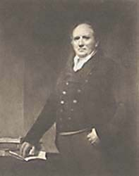
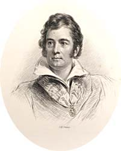

|
|
Home | Corson Collection | Biography | Works | Image Collection | Recent Publications | Portraits | Correspondence | Forthcoming Events | Links | E-Texts | Contact Financial HardshipScott suffered two major financial crises, in 1813 and 1825-26, both sparked by the collapse of his publishers: 1. The Fall of John Ballantyne and Co. (1813)In 1809, Scott had broken with Archibald Constable and helped to set up the rival publishing house of John Ballantyne and Co. (see The Ballantyne Brothers). Scott obtained a half-share in this new business, and the Ballantyne brothers, John and James acquired a quarter share each. Profits were to be divided in the same proportion, and policy to be decided jointly. In practice, however, Scott, who had loaned an additional £1,500 to increase the business's liquid assets, made all major decisions and determined which titles should be published. Like Scott's involvement with James Ballantyne's printing house, his participation in this new enterprise was a closely guarded secret.
Another long-cherished Scott project, however, proved the chief
drain on the firm's resources. The Edinburgh Annual Register
began with encyclopedic ambitions and an impressive list of contributors.
Each volume was originally to include an account of world events
in the year covered, followed by surveys of developments in the
spheres of literature, science, fine arts, 'useful arts', meteorology,
and commerce. It suffered, however, from desultory and inconsistent
editing (at the hands of Scott and James Ballantyne) and fell well
short of its ambitions. It failed to print most of the advertized
essays, always appeared at least two years late, and was too politically
partisan for an annual publication. By 1812, it was losing £1,000
a year. Such errors of commercial judgment were to prove fatal in
a war-ravaged economic climate marked by banking crises and the
increasing unavailability of credit.
In 1811, as unsold stock gathered in dust in the warehouse , Scott paid the exorbitant price of £4,200 for Cartley Hole Farm, the property which he was soon to expand into the estate of Abbotsford. He borrowed half the sum from his brother Major John Scott, and the rest was raised by John Ballantyne on the security of Rokeby, the as yet unwritten poem on which Scott was banking to restore the fortunes of the publishing house. When, in 1813, sales of the completed poem proved disappointing, the financial standing of John Ballantyne and Co. fell so low that no bank would extend it a further loan. Worse still, the publishing house was threatening to drag James Ballantyne's printing house down with it. The Ballantyne Press, in fact, was John Ballantyne and Co.'s principal creditor, having as yet received little payment for the volumes it had printed for its sister-company. Scott resolved to wind down the publishing house, but how to do so without revealing his own role was a delicate matter. Scott's social (and quite possibly professional) position would have suffered by the revelation that he was partner in a debt-ridden business and that he had profited in three ways (publishing, printing, and copyright) from the sales of his own books.
Much to Scott's embarrassment, the publishing house was obliged to turn to Archibald Constable in the hope that he might take over its surviving assets. Constable drove a hard bargain offering £1,300 for part of John Ballantyne's unsold stock, on condition that the firm wind up immediately and Scott allow him to purchase a quarter share of the copyright of Rokeby for an extra £700. Constable also agreed to prepare a report into the financial state of both the printing and publishing houses. His conclusion, that they must raise £4,000 immediately to avoid bankruptcy, came as a shock to all three partners. Scott, though, was particularly shaken, as bankruptcy would mean not only revealing his dubious financial dealings to the world but resigning his post as Clerk to the Court of Session (see Professional Life). In desperation, he appealed to his patron and clan-chief, the Duke of Buccleuch, who generously agreed to stand guarantor behind an overdraft of £4,000. 2. The Fall of Archibald Constable and Co. (1825-26)By the mid-1820s, Archibald Constable (portrayed, right) was becoming increasingly nervous about the huge number of bills in circulation bearing his firm's name. These were of two kinds. Firstly, beginning with Marmion (1808), Constable had pioneered an advance system of authorial payment, whereby Scott was paid for a literary work before it was actually written. With Scott requiring ever greater funds for his work on Abbotsford and for the lavish entertaining that his public role entailed, he had taken increasing advantage of this arrangement. By 1825, Scott had outstanding contracts for nine works with Constable, for which he had received advance payment of £10,000. Although Constable himself required to invest immense sums in re-editing the Encyclopaedia Britannica, fear of losing his most bankable author lured him into dangerous levels of debt. Secondly, there were 'accommodation bills' issued not in payment for any work done but for the purpose of raising money on credit. One company or individual would make out a credit note for an amount repayable by a certain date. In return, they required the recipient to make out a counter-bill to the same amount (in order to permit the issuing body to obtain credit for such a sum and to continue trading). These counter-bills were usually held in reserve but were sometimes cashed by the issuing body. If the issuing body could not meet its obligations and the bill proved worthless, the recipient was liable for the entire sum drawn. If, however, the issuing body had cashed or circulated the counter-bill, the recipient was again liable for the amount for which it had been granted. In other words, the recipient would be required to repay the same loan twice. This was a system that tied businesses together in a most precarious manner. Archibald Constable and Co. and James Ballantyne and Co. had each backed the others bills. If either company fell, the other was likely to collapse in its wake. Just as Scott's financial demands were undermining the foundations of Archibald Constable and Co., they were placing the Ballantyne Press in increasing jeopardy. Between 1816 and 1822, unknown to the business world, Scott was the sole owner of the Ballantyne Press. Considered a sound concern by the banking houses, the press enabled Scott to raise bills that he would never have been granted as a private individual. He had made extensive use of these credit facilities to finance work on Abbotsford, with the result that when, in 1822, James Ballantyne was re-admitted as co-partner, the business had debts of £27,000. (Ballantyne and Constable too had acquired the dangerous habit of using accommodation bills to fund work on their own property.) Scott acknowledged to Ballantyne both the extent of these debts and his personal responsibility for them. Ballantyne believed that the lands and estate of Abbotsford proved more than adequate security for the firm's liabilities. But in 1825 Scott settled the estate upon his newly married son (though a clause permitted Scott to enjoy life-rent of the property). According to Scots Law as it then stood, Abbotsford was thus put beyond the reach of creditors. James Ballantyne was kept in ignorance of this settlement, and it would come as a rude shock to discover that Abbotsford was not a Printing Office asset (see The Ballantyne Brothers). In 1825 the City of London was swept by a wave of speculation. This soon gave way to panic selling, tumbling prices, and a credit squeeze by the Bank of England. At the height of speculation fever, J.O. Robinson of Constable's English agents, Hurst, Robinson, & Co. had bought over £40,000 in hops in the hope of cornering the market. The market was already glutted, and he was forced to sell at rock-bottom prices. Under pressure to return the £30,000 capital Robinson had borrowed, Hurst, Robinson, & Co. were soon having the greatest difficulty in meeting their obligations. Constable & Co. had backed their bills; James Ballantyne & Co. had backed those of Constable & Co. As none of the three firms had a solid security, the collapse of one would bring all three crashing down. Hurst, Robinson & Company were able to meet their most pressing debts for a few weeks by raising short-term loans, but by December 1825 bankruptcy appeared inevitable.
In Edinburgh, frantic efforts were made to drum up credit for Archibald Constable & Co. A clause inserted in his son's marriage settlement enabled Scott to raise a £10,000 mortgage on Abbotsford. This he promptly did with the bulk of the sum going straight into Constable's coffers. On January 5, 1826 an ever more anxious Scott suffered a slight stroke. On January 14, the crisis finally materialized. A bill for £1,000 made out by Robinson in favour of Constable could not be honoured on its due date. Constable had long since cashed and spent the amount. The Bank of Scotland immediately refused any further credit, and Archibald Constable & Co. were forced to stop payment. As a private individual and as a partner in James Ballantyne and Co., Scott found himself with debts of £121,000, largely as a result of the duplication of bills under the 'accommodation' system. Scott had four options. He could declare personal bankruptcy, apply for trade bankruptcy (for the majority of his debts had been incurred via his trade partners), apply to friends and relatives for loans, or effect a trust deed. The first would have involved the loss of his library, furniture, and life-rent of Abbotsford and would probably have meant exile. The second would have allowed him to set up in business again in a matter of months by paying his creditors as little as seven shillings in the pound. His sense of honour, however, would not permit such an escape route. Offers of financial assistance, meanwhile, were flooding in - from his son and daughter-in-law, from the Dukes of Buccleuch and Somerset, from Scott's friends, J.S. Morrit, James Skene, and Colin Mackenzie - but Scott was appalled by the thought of charity. It was the final option, the trust deed, that Scott preferred and which his creditors were happy to accept. The creditors, then, set up a private trust into which Scott would pay his entire revenue from literary sources and thus eventually clear his debts. Scott's close friend, the Edinburgh banker Sir William Forbes (portrayed, right), was instrumental in persuading the Bank of Scotland to accept this arrangement. The Bank had initially argued that Scott's contracts with Constable should be honoured, and that the money from the works in hand should go to the publisher's estate and creditors. They had also felt that Scott's alienation of his creditors' claims on Abbotsford might be open to legal challenge. Forbes also served Scott in paying off the sole creditor who refused to accept the trust option, the London firm of Abud & Sons . The other creditors' clemency stemmed partly from a reluctance to drag down a man regarded as a national treasure, the news of whose ruin had awakened great public sympathy. There was also, however, the hard-headed calculation that should Scott continue writing best-sellers at his current rate (he had written eighteen novels in the previous ten years), they might well see their money back in the not too distant future. They nonetheless took the precaution of insisting Scott take out a life-insurance policy of £20,000 payable to the Trust in the event of his death. Scott was permitted to continue to receive the benefits of his official salaries (see Professional Life). He voluntarily sold his house at 39 Castle Street but was able to preserve his life-rent of Abbotsford. Constable, conversely, was utterly ruined, and his relations with Scott came to an abrupt end. Scott felt that the crash was largely his publisher's responsibility and was particularly bitter about the mortgage on Abbotsford which he had fruitlessly raised to bail him out. Subsequent research, however, has suggested that Cadell was the prime mover in the mortgage episode, and most recent biographers feel that Constable was harshly judged by Scott. Be that as it may, Scott threw in his lot with Cadell, regarding his contracts with Constable as null and void (a point on which the courts eventually agreed). He launched himself into a ferocious period of writing (Woodstock, Chronicles of the Canongate, The Life of Napoleon Buonaparte) that had already brought in £40,000 by Christmas 1827. The most lucrative project, however, would be the 'Magnum Opus', a readily affordable edition of the Waverley Novels with new introductions and copious notes. Originally floated to Constable, this would be brought out in 48 volumes by Cadell between 1829 and 1833. By the time of Scott's death on September 21, 1832 the debt had been reduced to £53,000. It would finally be paid off in 1847 by the sale of Scott's remaining copyrights.
For further information on Scott's financial dealings, consult the following in addition to the other works cited on the Bibliography page:
Last updated: 24-Oct-2003 |
|||||||||

 In
May 1810 John Ballantyne and Co. published Scott's
In
May 1810 John Ballantyne and Co. published Scott's